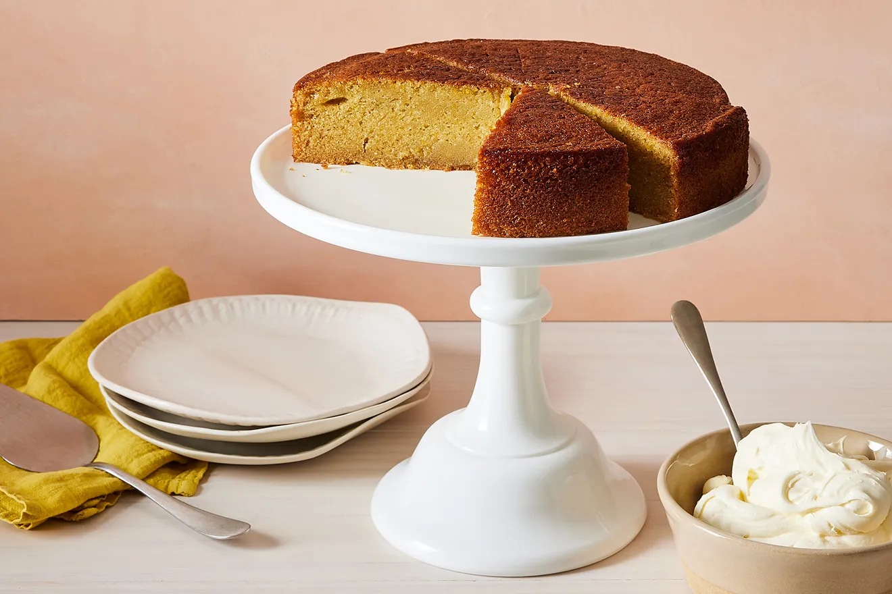

Olive Oil Cake

Description
Olive oil cake at its best has a crackling crust and an aromatic oil-rich middle, which, if it held any more moisture, would be pudding. Pulling this off should be easy—there aren't even egg whites to whip and fold, or butter to cream—but it isn't always. This one, however, is perfect, and will ruin you for all others.
Ingredients
- 2 cups (250 grams) all-purpose flour
- 1 3/4 cups (350 grams) sugar
- 1 1/2 teaspoons kosher salt
- 1/2 teaspoon baking soda
- 1/2 teaspoon baking powder
- 1 1/3 cups (285 grams) extra-virgin olive oil
- 1 1/4 cups (305 grams) whole milk
- 3 large eggs
- 1 1/2 tablespoons grated orange zest
- 1/4 cup (60 grams) fresh orange juice
- 1/4 cup (55 grams) Grand Marnier
Directions
- Heat the oven to 350° F. Oil, butter, or spray a 9-inch cake pan that is at least 2 inches deep with cooking spray and line the bottom with parchment paper. (If your cake pan is less than 2 inches deep, divide between 2 pans and start checking for doneness at 30 minutes.)
- In a bowl, whisk the flour, sugar, salt, baking soda and powder. In another bowl, whisk the olive oil, milk, eggs, orange zest and juice and Grand Marnier. Add the dry ingredients; whisk until just combined.
- Pour the batter into the prepared pan and bake for 1 hour, until the top is golden and a cake tester comes out clean. Transfer the cake to a rack and let cool for 30 minutes.
- Run a knife around the edge of the pan, invert the cake onto the rack and let cool completely, 2 hours.
Home